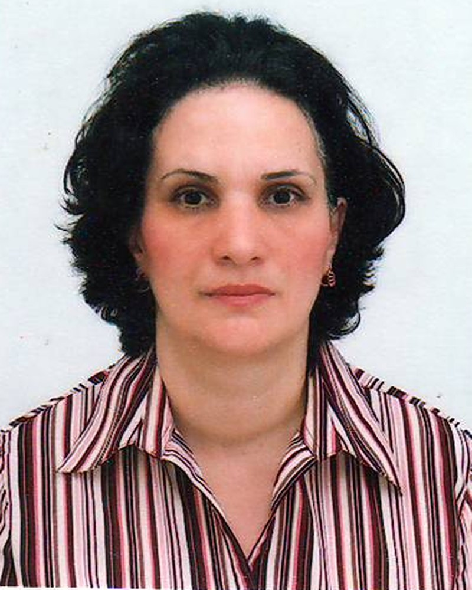

Institute of Physics of Science and Education Ministry of azerbaijan, Baku, Baku, Azerbaijan

Artificial intelligence has achieved remarkable success in processing symbols, language, images, and complex patterns. Classical information theory represents information through binary states (bits), while quantum information theory extends this framework by introducing qubits and, more generally, qudits. These approaches significantly increase computational power; however, they do not by themselves explain conscious information processing. In this work, we propose that the limitation is not the number of informational states but the elementary unit of representation itself. We hypothesize that the minimal unit of conscious information processing is not an isolated event but a Self-Referential Focal Relation (SRFR). Human cognition rarely operates with independent events. Instead, it organizes experience through relations such as here–there, now–then, cause–effect, self–other, and past–future. Meaning emerges not from individual states but from the organization of these relations. From this perspective, consciousness is associated not only with representing the external world but also with representing the observer as a participant within the relational structure. The proposed concept extends Lotfi Zadeh's Possibility Theory. While possibility theory introduces focal elements as fundamental informational structures, we propose Self-Referential Focal Relations, which integrate spatial, temporal, causal, and semantic relations while explicitly including the observing system itself. Such relations may represent a more appropriate elementary unit for describing conscious cognition than isolated events or independent logical states. This interpretation also provides a different perspective on bits, qubits, and qudits. Classical bits represent discrete alternatives, whereas qubits and qudits allow richer informational state spaces. Nevertheless, increasing the number of possible states does not, by itself, explain the emergence of conscious experience. We suggest that consciousness depends primarily on the organization of self-referential relations rather than on the dimensionality of the state space. The proposed framework is conceptually related to contemporary computational approaches that describe reality through evolving relational structures. In particular, Stephen Wolfram's computational framework emphasizes the emergence of complexity from networks of simple transformation rules. Although our work addresses a different problem, both approaches recognize relations and their evolution as fundamental organizational principles. We therefore propose a transition from event-based information processing toward relation-based, self-referential information processing. This framework may provide a conceptual bridge connecting fuzzy logic, possibility theory, quantum information, artificial intelligence, and consciousness studies. It also suggests a possible direction for future AI architectures capable of representing not only the external world but also their own position within a dynamically evolving network of relations.
Azerbaijan, Baku State University, Physics, PhD